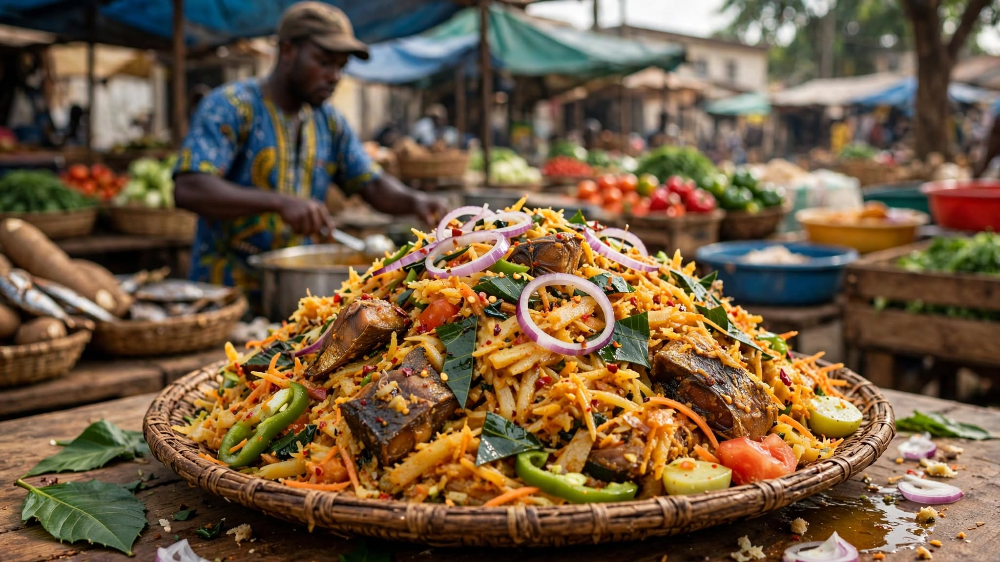
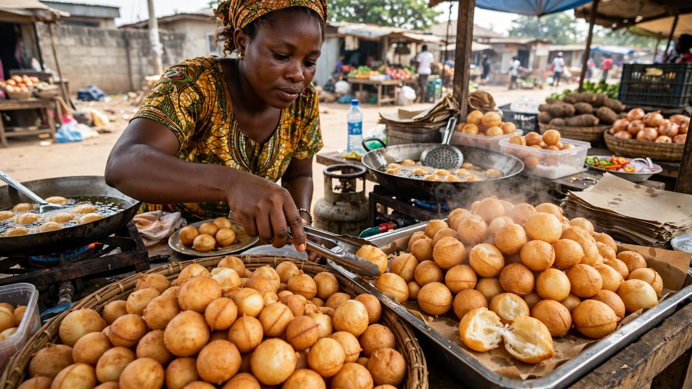
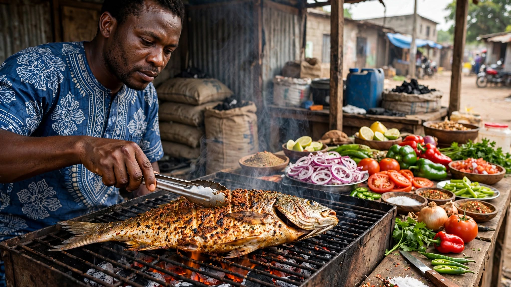

Suya
Spicy grilled meat served with onions and other local accompaniments.
Typical price: ₦500–₦2,000
Category: Grilled
Explore Abuja
Discover some of the popular street foods you can enjoy around Abuja without spending too much.
Spicy grilled meat served with onions and other local accompaniments.
Typical price: ₦500–₦2,000
Category: Grilled

Soft rice cakes that are popular in northern Nigeria and commonly enjoyed as a snack.
Typical price: ₦300–₦1,000
Category: Traditional

Thin, dried and seasoned slices of meat with a rich spicy flavor.
Typical price: ₦500–₦2,500
Category: Dried

African salad made from shredded cassava, often served with vegetables and local seasonings.
Typical price: ₦500–₦1,500
Category: Traditional

Small, soft and lightly sweet fried dough balls that make an affordable snack.
Typical price: ₦100–₦500
Category: Snack

Seasoned fish grilled over heat and commonly enjoyed with onions, pepper, or other sides.
Typical price: ₦2,000–₦5,000
Category: Grilled